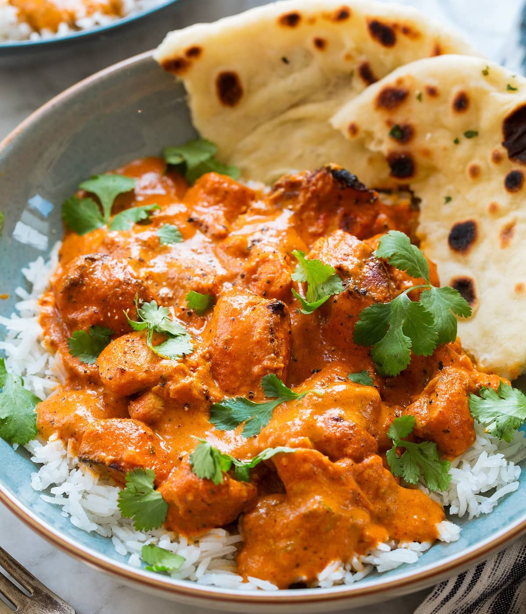

Butter Chicken
The sauce for this butter chicken is cooked slowly on the stovetop and takes on a long-cooked tomato flavor, while broiled marinated chicken adds a needed bit of char and acidity to the final dish.

Ingredients
For Marinating the Chicken
- 1 tbsp kasuri methi
- 1/4 cup plain Greek yogurt
- 1 tbsp garam masala
- 2 tsp diamond crystal kosher salt
- 1 tsp kala namak
- 1 inch fresh ginger, peeled and finely grated
- 2 lb boneless, skinless chicken thighs/li>
For the Makhani Sauce
- 2 tbsp kasuri methi
- 2 whole dried chilies de arbol
- 1 pod brown cardamom
- 1 whole clove
- 1 tbsp garam masala
- 1 tbsp diamond crystal kosher salt
- 1 28 oz can whole fire-roasted tomatoes
- 1 oz raw cashews
- 1 1/4 cup water
- 2 tbsp canola oil
- 1 medium white onion
- 1/4 tsp baking soda
- 1 inch fresh ginger, peeled and finely grated
- 4 cloves of garlic
- 1/2 cup heavy cream
- 4 tbsp unsalted butter
- warm long grain rice for serving